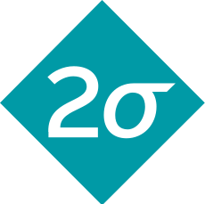

About Me

Hi, I'm Josie!
I am an undergraduate computer science student at Rice University in Houston, TX.
I am passionate about using my technical, creative, and interpersonal skills to design mission-driven technology.
Hi, I'm Josie!
I am an undergraduate computer science student at Rice University in Houston, TX.
I am passionate about using my technical, creative, and interpersonal skills to design mission-driven technology.

I developed a tool that visualizes software developer resources across financial quarters to redistribute resources if necessary. I built an engineering team summary that accumulates data from Azure DevOps and allows managers to see how accurate their predictions for work were.
I mentored a high school robotics team to build and program a robot for the regional championship. I taught students the fundamentals of object-oriented programming and teamwork.

I worked with the non-profit Kids in Need of Defense (KIND) which provides children with representation in immigration court to create a React mobile app for the phones they give the kids they work with (https://kindportal.org). I created the content cards in both English and Spanish so that children can review their rights and responsibilities in the app.
I developed a web app with a team on RiceApps that streamlines carpool organization between Rice University students and currently maintains more than 500 users (http://carpool.riceapps.org/). I worked on email notifications and enhancing user experience features.